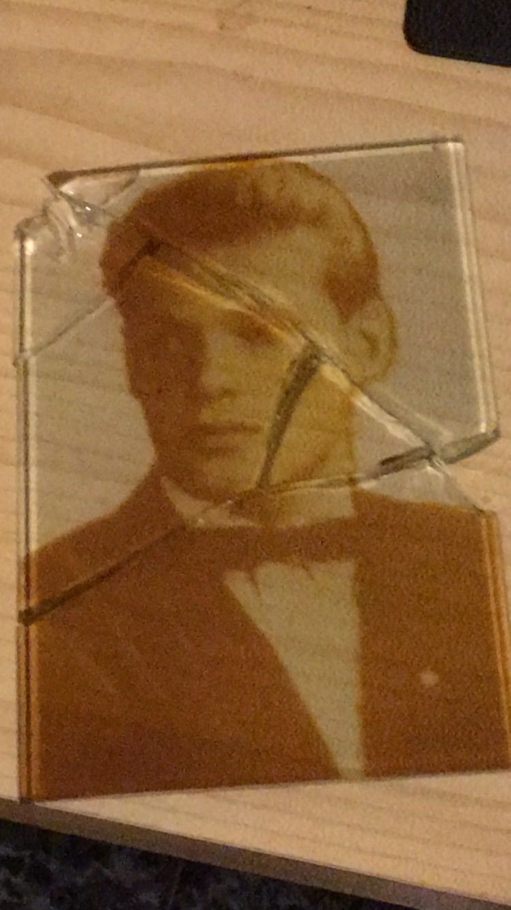

Here is my grand grandfather
I know that he was an engineer and I got his first and last name.

That's my grandfather
This year the picture gonna ring the bell of history. It goes to 100. I don't know how good he was in cavalry but when he goes to play golf he was the deputy of minister. When he dyed I was four. To me he was just funny-jumping guy who gives me candies.

That's my dad
Space rocket engineer. This year he cud be 80. When I start to walk I find out two things: dad is busy and I shouldn't bother him. Now Elon Musk keep saying that our rockets are the best in the world. Excluding his BFR. So now I understand why I didn't see my father's face when I was a child. Just his tight and strong closed cabinet door.

That's my father's job
Hi is dead now. More than twenty years. And now just a few people in the world know what he did. All of them are old. Now when all the secrecy passed by and Elon make whole the rocket using this shit I can say: more then 50% weight everything flying around the earth was pushed up by my father's physics research and you know what. This picture is the one and only place in Internet where his name was mentioned.
How it looks now
That's how it looks like. If you remember the sises of first space rockets you realize it's starts noticeably grow down for last 45 years. And it's the small part of my father's research is inside everything that flies to the space now. That's what he did. So please please when you gonna next time use TV, Internet or a weather forecast just remember that it wasn't always like this. Somebody lived his life to make it happens.
{kind=link}

{kind=link}

{kind=link}